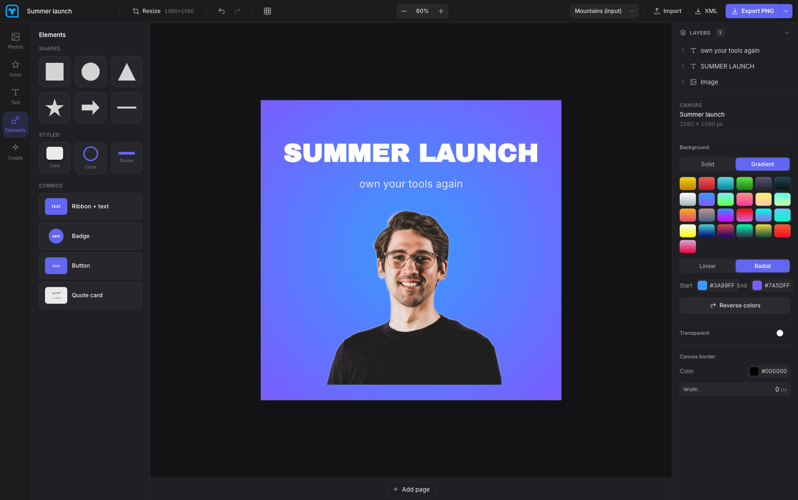

The design editor you bought for life.
Now free for everyone, forever.
Youzign is back — completely redesigned as an open-source desktop app. No subscriptions, no servers, no accounts. Your designs live on your computer, and the app is yours to keep. That's what lifetime should have meant all along.
Launching today — check back soon
macOS · Windows · Linux
Free. No sign-up.
Free. No sign-up.
- Open-source desktop app — inspect it, fork it, trust it
- Free for life — actually. No tiers, no trials, no catch
- You own it — designs stay on your machine, export any time
- Bring your own key — plug in AI image generation when you want it
- Background removal, free for life — runs on your device, not our servers
- Your old designs — archive import from youzign.com lands next week
